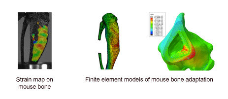
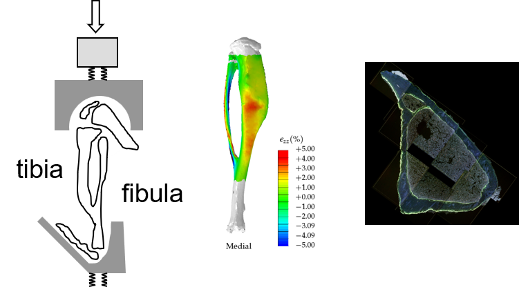

This project was conducted to study the mechano-adaptation of the tibia due to various and constant stress and strain.
The tibia of the mouse was put under Computer Tomography scan machine and all the individual layers were imaged.
Then all the individual image layers were stacked up on each other using a software called MIMICS.

The above image shows the final meshed model of the mouse tibia and its FEA results.
The 3D FEA model of the tibia is generated with MIMICS after stacking all the layers of the images. Once the 3D model is created, it is then loaded into ABAQUS for further processing.

The above image shows the setup of a real-time mouse tibia on a UTM followed by the ABAQUS FEA results and then the CT scan image of an individual layer.
Once the 3D model is loaded in to the FEA program, all its properties such as material, boundary conditions and loading conditions are defined

The above image is the FEA output obtained once the model is solved by ABAQUS.
The results obtained in the digital model are compared and studied together with the results obained from the real time results.
I did this project as a part of my Master's degree program at Northeastern University, under Prof.Sandra Shefelbine.
I was involved in gathering the CT scan images, stacking them up together into MIMICS to create a functional FEA model.
I utilized ABAQUS to run the FEA program and work with the PhD candidate experimenting the real time mechano-adaptation of the bone.